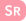
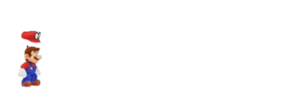
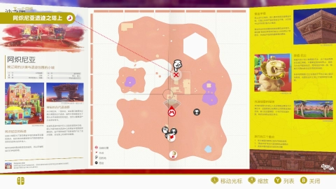
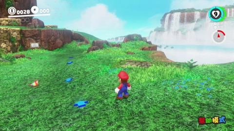
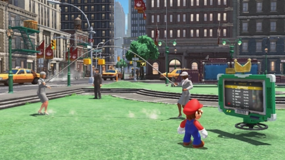
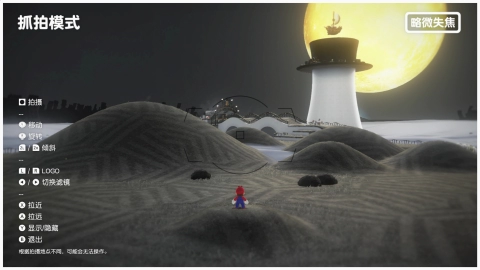

动作指南


重置视角
环视
扔帽子
下蹲
或是
地图
跑
跳
或是
或是
移动
飞出去 / 返回
环视
或是
暂停菜单

选择“２人游戏”，
可以使用马力欧和凯皮协力游玩！
可以使用马力欧和凯皮协力游玩！
１人游戏
２人游戏
马力欧
马力欧 + 凯皮


Pro手柄也可以进行几乎和Joy-Con相同的操作。
无论手柄如何组合，都可以进行２人游戏。
远跳
边跑边按
翻滚
或是
按住时，挥动撞地
在空中按身体攻击
在空中按落下时按
撞地跳
在空中按着陆后按附身
或是
挥动（解除附身）
上扔
向上挥动下扔
向下挥动旋转扔
横着挥动扔帽子 停留
长按踩帽跳
靠近停留中的帽子扔帽子 追踪
连续挥动后空翻
侧空翻
边跑边向后按三级跳
看准时机按踢墙跳
贴着墙壁时按拿/扔
或是
挥动游泳
蛙泳
旋转
转动冲
进入水管
在水管上按莱德·巴士
刹车下车
摩托车
油门跳
下车
青蛙
冲跳
如果挥动，就能进行高空跳。
啪嗒栗子小子
飞如果挥动，就能飞得更快。
汪汪
推动后，如果松开的话，汪汪就会冲出去。暴龙
冲攻击
也可以挥动进行攻击。
望远镜
环视缩放
也可以使用环视。
重置
弹头杀手
长按加速如果挥动，就能进一步加速。
观像
戴上/摘下眼镜栗子小子
冲跳
如果挥动，就能进行高空跳。
滑翔小子
长按滑翔朱盖木
放下/拉起鱼线泡泡怪
下潜上升
如果挥动，就能进行攻击。
腿伸伸
长按伸长如果挥动，就能进一步伸长。
火焰兄弟
扔跳
如果挥动，就能更用力地扔。
坦克仔
瞄准射击
也可以使用瞄准。
重置
岛花之子
伸长如果挥动，就能快速伸长。
飙风云
长按吹气如果挥动，就能更用力地吹气。
博乌尔人赛跑手
跳也可以挥动起跳。
轰水
长按前进长按上升
如果挥动，就能向四周喷水。
火焰泡泡
冲跳
如果挥动，就能冲得更快。
锤子兄弟
扔跳
如果挥动，就能更用力地扔。
啄啄儿
突刺/离开弹开
跳
布鲁
长按，如果松开就能进行冲撞。酷霸王
出拳跳
如果挥动，就能放出火焰。
耀西
伸舌头长按浮游跳
也可以挥动来伸长舌头。


在旅行的途中按下，就会显示地图，通过地图可以知道自己目前的所在地或是目的地。在地图上移动，
选择中点后就可以马上移动到那里。而且，打开地图后按，还可以确认力量之月列表和附身列表等。
选择中点后就可以马上移动到那里。而且，打开地图后按，还可以确认力量之月列表和附身列表等。

按从暂停菜单的“选项”＞“模式选择”，可以选择“帮助模式”。
这是适合儿童或是不熟悉游戏操作的玩家，拥有较多生命的模式。此外，还有便利的功能协助您的旅行，
例如：指示目的地的箭头，即使失足也能回到原位。只要停止不动，就能恢复生命呢。
选择模式
这是适合儿童或是不熟悉游戏操作的玩家，拥有较多生命的模式。此外，还有便利的功能协助您的旅行，
例如：指示目的地的箭头，即使失足也能回到原位。只要停止不动，就能恢复生命呢。
如果您拥有马力欧、桃花公主或是酷霸王的amiibo，请试着在旅途中按住 ，同时使用amiibo触碰NFC区域。
，同时使用amiibo触碰NFC区域。
即使是其他amiibo，也可能会发生一些好事呢。
马力欧的amiibo : 在一定时间内呈现无敌状态，不会受到伤害。
桃花公主的amiibo : 可以得到体力心。
酷霸王的amiibo : 会显示本地硬币的位置。请旋转视角找找看。
，同时使用amiibo触碰NFC区域。即使是其他amiibo，也可能会发生一些好事呢。
马力欧的amiibo : 在一定时间内呈现无敌状态，不会受到伤害。
桃花公主的amiibo : 可以得到体力心。
酷霸王的amiibo : 会显示本地硬币的位置。请旋转视角找找看。

请连接上互联网后和排名板搭话。可以确认各种游戏的分数或是时间的排名。要不要试着挑战好友或是世界中玩家的纪录呢？

在旅行的途中按下，就能准备拍摄游戏画面。试着移动视角、使用滤镜，记录下专属于您的一张照片吧。
准备好了之后，只要按下就可以拍摄。照片会被储存在主机的相册中。
准备好了之后，只要按下就可以拍摄。照片会被储存在主机的相册中。